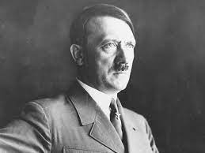

أدولف هتلر زعيم ألمانيا النازية، ولد في الإمبراطورية النمساوية المجرية ، وكان زعيم ومؤسس حزب العمال الألماني الاشتراكي الوطني والمعروف باسم الحزب النازي. حكم ألمانيا النازية في الفترة ما بين عامي 1933 و1945 حيث شغل منصب مستشار الدولة في الفترة ما بين عامي 1933 و 1945، والفوهرر في الفترة ما بين عامي 1934 و1945.
ولد أدولف هتلر (1889–1945) في 20 أبريل 1889 في مدينة برونو آم إن الواقعة على حدود النمسا العليا. انتقل هتلر مع عائلته في عام 1898 إلى لينز، عاصمة النمسا العليا. كان هتلر يتجادل كثيرًا مع والده لأنه أراد أن يكون فنانًا تشكيليًا ، بينما أراده والده أن يلتحق بالخدمة المدنية في هابسبورغ.
عاش هتلر في فيينا في الفترة من فبراير 1908 حتى مايو 1913، ثم غادر بعدها إلى ميونيخ. وكان يقتات ويكسب رزقه من خلال الرسم بالألوان المائية والتصاميم وظل هكذا حتى الحرب العالمية الأولى التي غيرت مسار حياته بالكامل. انضم إلى الجيش. وأصيب مرتين أثناء الحرب (في عام 1916 و1918) وحصل على عدة ميداليات.
أُرسل هتلر إلى المستشفى العسكري في بازهفالك في أكتوبر 1918، بعد أن أُصيب بالعمى الجزئي في هجوم غاز الخردل بالقرب من إبير في بلجيكا. وصلته أخبار الهدنة التي وقعت في 11 نوفمبر 1918 وهو في المستشفى بينما كان يتعافى. سُمح لهتلر بمغادرة المستشفى في نوفمبر 1918 وعاد بعدها إلى ميونيخ.
وفي عام 1919 انضم إلى المكتب الإعلامي التابع للإدارة العسكرية البافارية. وقام هذا المكتب بجمع معلومات استخبارية عن الأحزاب السياسية المدنية وقدم للجنود "تثقيفًا سياسيًا" مناهضًا للشيوعية. وفي أغسطس 1919 ألقى هتلر بصفته أحد المدرسين في تلك الدورات التثقيفية أول خطاباته المعادية للسّاميّة. وبعد ذلك بشهر، كتب في الصحف لأول مرة عن الإيديولوجية العرقية المعادية للسامية، داعيًا إلى إبعاد اليهود عن ألمانيا.
انضم هتلر إلى الحزب النازي في أكتوبر 1919. ساعد في وضع البرنامج السياسي للحزب في عام 1920. استند البرنامج إلى معاداة العرقية السامية، والقومية التوسعية، ومعاداة الهجرة. وبحلول عام 1921، انفرد هتلر بزعامة الحزب النازي ليحمل لقب Führer (الفوهرر). وازداد عدد أعضاء الحزب النازي في عامين حتى وصل إلى 55 ألفًا، وكان يدعمه 4 آلاف رجل من الجناح شبه العسكري للحزب النازي (Sturmabteilung؛ كتيبة العاصفة).
رفض هتلر ومسؤولو الحزب النازي المشاركة السياسية في انتخابات فايمار، وسعوا إلى الإطاحة بالحكومة في بافاريا، وهي ولاية في جمهورية فايمار. حدث انقلاب بير هول في 9 نوفمبر 1923. بعد الانقلاب قامت المحكمة في ميونيخ بمحاكمة هتلر وآخرين من زعماء الثورة بتهمة الخيانة العظمى. واستخدم هتلر المحاكمة كوسيلة لمهاجمة نظام الديمقراطية البرلمانية وتعزيز القومية القائمة على كراهية الأجانب. وصدر حكم بإدانة هتلر، ولكنه حُكم عليه بعقوبة مخففة وأُطلق سراحه بعد أن قضى سنة واحدة فقط في الحجز. استغل وقته في السجن وبدأ في كتابة سيرته الذاتية في كتابه Mein Kampf (كفاحي) الذي نُشر في عام 1926. وأعرب في الكتاب بوضوح عن هدفه في خلق قومية عنصرية وداروينية اجتماعية كما أفصح عن رؤيته المعادية للسامية للتاريخ البشري. فقد دعا إلى الدكتاتورية داخل البلاد والتوسع العسكري والاستيلاء على المساحة السكنية (Lebensraum) في الشرق. وكان الألمان ينوون تطهير هذه المساحة السكنية في الشرق من سكانها الأصليين والأقل شأنًا.